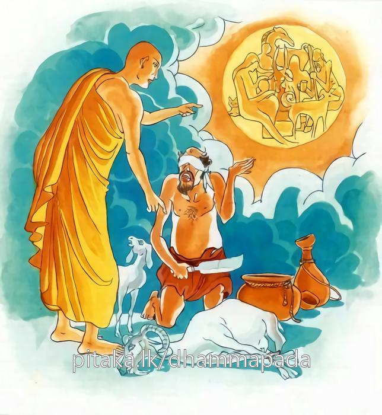

13-9 තරුණියක බොරු කියා නිරයට ගිය සැටි
මෙම කතාව ධම්මපද අටුවාවෙන් ද කියවන්න.
එකං ධම්මං අතීතස්ස මුසාවාදිස්ස ජන්තුනො
විතිණ්ණපරලොකස්ස නත්ථි පාපං අකාරියං.
එක ම වාක්සත්ය ධර්මය ඉක්ම ගිය, බොරු බොහෝ කොට කියන සුලු වූ, (දෙව් මිනිස් සැපට ද නිවන් සැපට ද හිමි නො වන බැවින්) හරණ ලද පර ලොව ඇති; සත්ත්වයා විසින් නොකට හැකි අකුසලෙක් නම් නැත.

බුදුරජානන් වහන්සේ බුදු බව ලබා වැඩිකල් නො යාදී ම උන්වහන්සේගේ ශ්රාවක සංඝ තෙමේ ගුණයෙන් හා ගණනින් ඉමහත් ව ගියේ ය. නිවන් අවබෝධ කළ දෙව්මිනිසුන්ගේ ගණන නො දත හැකි විය. බුද්ධගුණය අස්සක් මුල්ලක් නො හැර ලොව පැතිරිණ. එහෙයින් ලාභසත්කාරයෝ හැම දවසෙහි හැම පැයෙහි හැම මොහොතෙහි උන්වහන්සේ වෙත ගලා ආහ. එයින් ඉර උදාවීමෙහි දී කණමැදිරියන් සේ තීර්ත්ථකයෝ නැසුනු ලාභසත්කාර ඇත්තෝ වූහ. පාරක් තොටක් මංහන්දියක් කඩපිළක් නො හැර ඔවුහු සමතැන ඇවිද “කිම, ශ්රමණ ගෞතම පමණක් ම ද බුදු? ඇයි, අපි බුදු නො වමෝ? අපිත් බුදුහු වෙමු, කිම, ඔහුට දුන්දෙය පමණක පින්? මහත්පල? නැත, අපට දුන් දෙය ද පින්, අපට දුන් දෙය ද මහත්පල, අපටත් දෙවු, උන් සේ අපිත් නිවන් දැක්වීමෙහි පොහොසතුම්හ අපටත් උන්ට සේ සත්කාර කරවු” යි කියා පෑහ. එහෙත් ඔවුනට ලැබුනු ලාභසත්කාරයෙක් නො ද වී ය. වඩාලාත් ඔවුහු ලාභසත්කාරයෙන් පිරිහුනෝ ය. එකල තැන තැන විසිර සිටි තීර්ත්ථකයෝ එක්රැස් වූහ. සාකච්ඡා කළහ. “ශ්රමණ ගෞතමන්ගේ වරදක් මහාජනයා අතරට දී ඔහු ලාභසත්කාරයෙන් පිරිහෙලිය යුතු ය” යි ඔවුහු තීරණය කළහ.
එදවස සැවැත් නුවර ප්රසිද්ධ ගැහැණියක් වූ ය. ඕ රූ සපුවෙන් හැඩහුරුකමින් දෙවඟනන් පැරද වූ, දුටු දුටු දනන්ගේ මනනුවන් පැහර ගත්තු, අඟර දඟර පා මිනිසුන් තම වශයට ගැණීමෙහි ඉමහත් දස්කම් ඇත්තී ය. නමින් ඕ චිඤ්චිමාණවිකා ය. පිරිවැජ්ජන් සරණ ගිය පිරිවැජි තරුණියක. තීර්ත්ථකයන්ගේ සභාවෙහි සිටි එක් ක්රෑර මන්ත්රියෙක් ඇය නම් කොට “චිඤ්චිමාණවිකාව යොදා, ශ්රමණ ගෞතමට අපවාද උපදවා ඔහු ලාභසත්කාරයෙන් පිරිහෙලිය යුතු ය” යි කියා සිටියේ ය. හැම කෙනෙක් “ඒ මැනැවැ” යි පිළිගත්හ.
මින් පසු දවසෙක ඕතොමෝ පිරිවැජි අරමට ගියා තීර්ත්ථකයන් වැඳ සිටියා ය. එහෙත් තීර්ත්ථකයෝ ඇය හා නො බිණුහ. සතුටින් නො ද පිළිගත්හ. එකෙකුත් පියමනාප බවක් නො ද දැක්වී ය. එකල ඕතොමෝ, “ඇයි, හිමියෙනි! මා හා කතා නො කරහු? කිම, මා අත වරද? මෙන්න, වඳිමි හිමියෙනි! මා අත, මා නො දන්නා වරද කොතෙකුත් ඇතිවිය හැකි ය, කුමක් නිසා මා හා කතා නො කරහු? කියනු මැනැවි, මෙන්න, වඳිමි” යි තෙවරක් වැඳ සිටියා ය.
“කෙල්ල! තී කොහි සිටියෙහි? ශ්රමණ ගෞතම ගැණ නො දනිහි? ඔහු අප පිරිහෙලනු නො දකිහි? ඇස් නැත්තී වෙහි? අප ගැණ මිනිසුන් කළ කිරවයි ඔහු, තිට ඒ ගැණ කිසිත් දැනුමක් නැත්තාසේ ය පෙනෙන්නේ , තී කුම් අසහි? කුම් කෙරෙහි, තී ?” යි තීර්ත්ථකයෝ ගිඟුම් දුන්හ. චිඤ්චිමාණවිකා “කමන්න, හිමියෙනි! මෙන්න වැන්දා, මට ඒ ගැණ කුමක් කියහු? මම ඔබ කියන හැම එකක් කරමි, එහිලා මම පසු නො බලමි, කමන්න, හිමියනි! මෙන්න වැන්දා, කියනු මැනැවැ” යි කී කල්හි “බුහුන! අප ගැණ බලාපොරොත්තු වෙහි නම්, ශ්රමණ ගෞතමට වරදක් පමුණුවා එය රටෙහි සැම තැන පතළ කොට ඔහුට ගැහැට කරන්න, ඔහු ලබන ලාභසත්කාර නො ලැබෙන තැනට කටයුතු සලසන්න, ඔහු ලබන පුද පඬුරු වළකාලන්න, මග බැස නො යන තැනට වැඩ යොදන්නැ” යි කීහ. චිඤ්චිමාණවිකා තොමෝ “හොඳයි හිමියෙනි! ඕක මහ කාරියෙක් ද, මම ඒ හැම එකක් බලාගන්නම්, ශ්රමණ ගෞතමට පාඩමක් උගන්වන්නම්” යි කියා තීර්ත්ථකයන් වැඳ නික්ම ගියා ය.
ගැණු මායමෙහි කෙළවරට ම ගොස් සිටි මේ තොමෝ එතැන් සිට නුවරවැස්සන් රෑ බණ අසා දෙව්රමින් නික්මෙන වේලේ ඉඳුගොව්වකු සේ රතු පැහැති රෙදි කඩක් හිස පටන් පොරොවා සුවඳ මල් ගෙන දෙව්රම දෙසට යයි. යමෙක් “මේ වේලේ කොහි යෙහි දැ” යි ඇසී නම්, “මා යන තැන් තට කුමටැ” යි බැණ වැදී ගොස් දෙව්රම සමීපයෙහි වූ තීර්ත්ථකයන්ගේ පන්සලක නිදන්නී ය. නුවරවැසි උපාසකවරු ඉතා අලුයම යම්තම් පාන්වත් ම නින්දෙන් නැගිට මූණ කට සෝදා මල් පහන් සුවඳ දුම් ගෙණ ගෙවලින් නිම බුදුරජුන් පුදනට දෙව්රම් බලා යෙත්. ඒ වේලෙහි මෝතොමෝ දෙව්රම ඇතුළත නිදා ගත් සැටි පෙන්වමින් යුහු සුලු ව නුවරට වදියි. ඒ වේලෙහි “ඊයේ රෑ නිදි ගත්තෙහි කොහි දැ” යි ඇසී නම්, “මා නිදි ගැණුම් තට කුමට ය? ඇයි එසේ අසහි? මා කොතැන ලැග්ගත් තට ඇති කාරිය කිම? එහි තට ඇති අමාරුව කිමැ” යි පරුස බසින් බැණ වදියි. මෙසේ එක් මස් පසළොස් දවසක් ගෙවී ගියදා සිට “තී මේ වේලෙහි කොහි සිට එහි දැ” යි ඇසී නම්, “මම ඊයේ රෑ ශ්රමණ ගෞතමයන් හා ගඳකිළියෙහි නිදා හිඳ එමි” යි කියන්නට වූ ය. මේ ඇසු නූගත් සාමාන්ය මහාජන තෙමේ මේ කතාවෙහි සැක ඉපද වී ය.
මෙසේ කියමින් සිවු මසක් ගෙවූ මේ ගෑණිය නැවැත බඩ ඉදිරියට නෙරා සිටුනා සේ, රෙදි කැබලි බඩ තබා බැඳ ගැබ්ගත්තියක සේ පෙන්වමින් බඩ වසා රතු පැහැති රෙදි කඩක් පොරවා ගෙණ, “ශ්රමණ ගෞතමයන් නිසා ගැබිනි වූවා” යි පළමු කොට මෝඩ ගෑණු පිරිමින් ලවා ගැන් වූ ය. නැවැත අටමසක් නව මසක් පමණ ගිය තැන බඩ වඩාත් ඉදිරියට නෙරා සිටුනා සේ, දර කෝටු ගෙණ කුඩාවට කපා මිටියක් කොට රෙදිකඩෙකින් ඔතා එය බඩ බැඳ අනෙක් රෙදිකඩක් පොරොවා අතුල් පතුල් ගෙරි ඇටින් තළා උදුම්මා වෙහෙසට පත්වූවා සේ තතන තතනා සෙමින් සෙමින් අතන මෙතන හැසිරෙන්නී දවසක බුදුරජුන් බණඅස්නෙහි වැඩහිඳ බණ වදාරණ කල්හි එහි ගොස් බුදුරජුන් ඉදිරියෙහි සිටගත්තා ය.
සිට, “මහාශ්රමණය! මේ බලන්න මා බඩ, ඔබ මට කළ හරිය, බණ දෙසන්නට සමත් සේ ම මේ වැඩටත් ඔබ සමත්වෙති, යනු මට කළ මේ කාරියෙන් ම මහාජනයා තේරුම් ගෙණ ඇත. මෙබඳු වැඩවල දොස් මහාජනයාට කියතත් ඔබ මේ වැඩවලින් වෙන්වී නැත, ගෑණු අතරමං කිරීම ඔබට වරද නැත, ඔබට හොඳ ය, ඔබ නිසා මම ගැබිනී වීමි, මේ දරු ගැබ ඔබගේ ය, මේ දරු ගැබට මාස ගණන පිරී තිබේ, අද හෙට මේ ඔබගේ දරු එළි දකිනු ඇත, එහෙත් තවම එයට සුදුසු තැනකුත් පිළියෙල කොට නැත, තෙලට මිරිසට මොකුත් නැත, තෙමේ ඒවා සපයා ගැණිමෙහි අපොහොසත් නම්, ඔය ඉන්නා ඔබගේ මහාදායක වූ කොසොල් රජුට, අනේපිඩු සිටුහට, විශාඛාවට තමන් අතින් වූ මේ කාරණය කියා යවා වැදුම් ගෙට වුවමනා තෙල් මිරිස් ඉඟුරු සුදුලූණු ආදිය ගෙන්වා ගැණීම නරක ද, නො කළ හැකි ද, ඔය බණ කියන කටින් ඒ ටිකත් කීමේ වරදක් තිබේ ද, මේ කෙල්ලට කරන්න දෙයක් වහාම කරන්න, වදන්නී කොතැන දැ යි කියන්න, දන්නෝ මෙ පමණක් ද, අපේ පැරැත්තක් නැතිව ඒ කළ සේ, අපේ පැරැත්තක් නැතිව මේ වැදුගෙයි වැඩ ටිකත් කරන්න, ගැබ් ගත්විට කරණ සැටි නො දනිත් දැ” යි අසුචි පිඩක් ගෙණ සඳමඩලට ගසන්නා සේ මහපිරිස් මැද කියමින් බැණ වදින්නට වූ ය.
මාගේ ස්වාමිදරු වූ සම්බුදුරජානන් වහන්සේ බණ දෙසුම් නවතා සිහනදදෙන සිංහරාජයකු සේ “පරිබ්රාජිකාව! තා කියන කතාවේ සැබෑ බොරු තීත් මමත් දනිමු, අන්හු නො දනිත්” යි. වදාළ සේක. “ඇත්ත, මහණ! කීයේ සැබෑ ය, මේ කාරණය ඔබත් මාත් දන්නා බව මේ කවුරුත් දනිත්. එය කිය යුතු නො වේ ය” යි මෑ කියත් ම සක්දෙව් රජු ගේ සලස්න උණු වී ගියේ ය. සක්දෙව්රජ “කුමක් නිසා මා සලස්න උණු වී දැ” යි බලනුයේ චිඤ්චිමාණවිකා බොරුවෙන් බුදුරජුන්ට බැණ වදිනා බව දැන “මේ කාරණය මහාජනයා ඉදිරියෙහි ම පිරිසිදු කළ යුතු ය” යි අන් දෙව් පුතුන් සිවු දෙනකුන් හා එහි පැමිණියේ ය. දෙව් පුත් සිවුදෙන මී වෙස් ගෙණ ඇය බඩ බැඳ තුබූ කෝටු කැබලි මිටිය කපා දැමූහ. කෝටු කැබලි මිටිය ඇයගේ උඩ පතුල මත වැටුනේ ය. අග් පතුල් කැඩී ගියේ ය. පොරාවා ද තුබූ රෙදිකඩ සුළඟින් ගසා ගියේ ය.
ඒ දුටු මිනිස්සු “කාලකන්නි කෙල්ල! තී නිරපරාධ වූ කැලල් රහිත වූ මහාපුරුෂ වූ බුදුරජානන් වහන්සේට කුමක් නිසා මෙසේ බණිහි දැ” යි හිස කෙළ ගසා අතින් පයින් ගලින් කැටින් දඬුවෙන් මුගුරෙන් තළා පෙළා දෙව්රමින් පිටතට ඇද දැමූහ. ඈ බුදුරජුන් නො පෙණෙන මානයේ ගිය කල්හි පොළොව දෙකඩට පැළී අවීචි මහානරකයෙන් නැගී ආ ගිනිදැලින් දායාද විසින් ලත් කම්බිලියක් පොරවා ගතියක සේ වෙලී දැවටී අවීචි මහානරකයෙහි ඉපිද ගත්තු. මේ නිසා තීර්ත්ථකයෝ ද ලබා සිටි සත්කාරමාත්රයෙනුදු පතුලට ම ගිලිහී ගියහ. බුදුරජානන් වහන්සේ පිළිබද සත්කාරයෝ මහත් වූහ.
පසු දා ධර්ම ශාලාවෙහි රැස් වු භික්ෂූන් අතර “චිඤ්චිමානවිකා මෙතරම් මහත් ගුණ ඇති අග්රදක්ෂිණාර්හ වූ තිලෝගුරු බුදුරජානන් වහන්සේට බැණ වැද මේසා මහත් විපතට පත් වූවා” යි කතාවක් උපන. ඒ වේලෙහි එහි වැඩි බුදුරජානන් වහන්සේ භික්ෂූන් විචාරා “මහණෙනි! චිඤ්චිමානවිකා මට බැණ වැද විපතට පත්වූවා අද පමණක් නො වූවා පෙරත් මට බොරු කියා බැණීමෙන් විපතට පත් වූවා” යි වදාරා;
“බූ විසුරු පරාදොස් - (සියැසින්) නො දැක (අන්බස්)
(ගෙණ) මෙරමා කෙරෙහි - කුදුමාවරද හැමතින්
තෙමේ (අන්බස් හැර) - පසක් නො ම කොට (නිසිලෙස)
(දඬ කිසිවකුහටත්) - නො පණවා යනු දහමය”
යන මේ ලෙසින් මහාපදුම ජාතකය ද සවිස්තර ව වදාළ සේක.
එකල්හි මෝ චිඤ්චිමාණවිකා මහාපදුම කුමාර වූ බෝධිසත්ත්වයන්ගේ මව මළ පසු එම රජුගේ අගබිසෝ බවට පැමිණ මහසතුන් අනාචාරයට පොළඹවා ගන්නට නොයෙක් ගෑණු මායම් කොටත් නො හැකි වූවා තමන් ලෙඩ වු සැටියක් පෙන්වා “ඔබගේ පුතු මහාපදුම මා නො සතුටුව සීටියදී ම කෑකොස්සන් ගසත්දීම මා ඇද ගෙණගොස් මා දුෂණය කෙළේය” යි රජුට කියා සිටියා ය. රජ තෙමේ කිපියේ ය. කෝපවේගය උසුලා ගත නුහුනු රජ, මහසතුන් සොරුන් හෙලනා ගලින් පහතට හෙලවා ලීය. ඒ ගල්කන්දෙහි අරක් ගෙණ සිටි දෙවියෙක් බිම හෙන්නට නො තබා මහසතුන් වඩා ගෙණ නාරජකුගේ පෙණ ගොබයෙහි හින්ද වී ය. නාරජු ද මහසතුන් නා විමනට ගෙණ ගොස් එහි කොටසෙක අධිපති කොට (රජ කමෙහි) තැබී ය. මහාසත්ත්ව තෙමේ එහි අවුරුද්දක් පමණ වැස ඉන් නික්ම හිමවතට ගොස් පැවිදි ව ධ්යානාභිඥාවන් උපදවා ගත්තේ ය.
ඒ කාලයෙහි වනයෙහි දඩයම් කරණ එක් මිනිසෙක් මේ තවුසා දැක රජුට දැන්වී ය. රජ තෙමේ තවුස් වෙත ගොස් ආ ගිය තොරතුරු කතා බස් කොට සතුටු ව බෝසතුන් රජයෙන් පවරා සිටියේ ය. තවුස් තෙමේ එය නො ද පිළිගෙණ “දශරාජධර්මයන් නො ඉක්මවා අගතියට නො බැදී දැහමින් රජය කරවයි අවවාද කෙළේ ය. එවේලෙහි රජ හුන් තැනින් නැගිට කඳුලු පෙර පෙරා හඬමින් නුවරට පිවිසෙනුයේ අතරමගදී ඇමැතියන් අතින් “මම කුමක් නිසා මේ හැටි යහපත් ගති ගුණ ඇති මනා පැවතුමෙන් යුත් කෙනෙකුගෙන් වෙන් වීම් දැ” යි ඇසී ය. “මහරජ! අගමෙහෙසිය නිසා” යි ඔවුහු පිළිතුරු දුන්හ. එයින් කෝපවේගයෙන් වේගවත් වූ රජතෙමේ ඈ කකුල් දෙකින් ගන්වා හොරුන් හෙලනා ගලින් පහතට හෙලවා නුවරට වැද දැහැමින් රජය කෙළේ ය, යි බුදුරජානන් වහන්සේ මේ අතීත පුවත මෙසේ වදාරා “එදවස මහාපදුම කුමාර වූයේ මහාසත්ත්ව තෙමේ ය, චිඤ්චිමානවිකා එදවස ඒ රජුන්ගේ දෙවන අගබිසෝ ය” යි පහදා දී “මහණෙනි! සත්යවචනය හැර දමා බොරුවෙහි පිහිටා පරලොව ගැණ නො තකන ගිහි පැවිද්දන්ට නො කළැකි පව්කමෙක් නැතැ” යි මේ ධර්මදේශනාව කළ සේක.
එකං ධම්මං අතීතස්ස මුසාවාදිස්ස ජන්තුනො,
විතිණ්ණපරලොකස්ස නත්ථි පාපං අකාරියන්ති.
එක ම ධර්මයක් ඉක්මවාලූ බොරු කියන සුලු වූ හළ පරලෝ ඇති සත්ත්වයා විසින් නො කොට හැකි වූ පාපයෙක් නැත්තේ ය.
එකං ධම්මං අතීතසස = එක් ධර්මයක් ඉක්මවා සිටියා වූ.
මෙහි ‘එකං ධම්මං’ යනු ආයේ වාක් සත්යය සඳහා ය. සත්යවචනය වාක් සත්ය නම්. ‘සච්චං භණෙ න කුජ්ඣෙය්ය’ යනාදී තන්හි සේ ය.
“අතීතස්සාති යා සා අට්ඨ අනරියවොහාරෙ වජ්ජෙත්වා අට්ඨසු අරියවොහාරෙසු පතිට්ඨාය සච්චං භණෙන අලිකන්ති අරියෙහි ඨපිතා මරියාදා, තං අතික්කමිත්වා ඨිතස්ස” අට වැදෑරුම් අනාර්ය්ය ව්යවහාරය දුරු කොට අට වැදෑරුම් ආර්ය්යව්යවහාරයෙහි පිහිටා බොරු නො කියන්නේ ය. ඇත්ත කියන්නේ ය යි ආර්ය්යයන් විසින් තැබූ සීමාව ඉක්මවා යන අනාර්ය්ය ව්යවහාරයට බැස බොරු කියන්නා වූ. ‘ජන්තු නො’ යන්නට විශේෂණ ව සිටියේ ය. එහි අනාර්ය්යව්යවහාරය නම්, “ අදිට්ඨං දිට්ඨං මෙ, අසුතං සුතං මෙ, අමුතං මුතං මෙ, අවිඤ්ඤාතං විඤ්ඤාතං මෙ දිට්ඨං අදිට්ඨං මෙ, සුතං අසුතං මෙ, මුතං අමුතං මෙ, විඤ්ඤාතං අවිඤ්ඤාතං මෙ” යි ආයේ ය. ඇසින් නො දුටු කණින් නො ඇසූ නැහැයෙන් දිවෙන් සිරුරෙන් නො ගත් නො දත් සිතින් නො ගත් නො දත් අරමුණු මා විසින් දක්නා ලද ය, අසන ලද ය, ගන්නා ලද ය, දන්නා ලද ය යි ද, ඇසින් දුටු කණීන් ඇසූ නැහැයෙන් දිවෙන් සිරුරෙන් ගත් සිතින් දත් අරමුණු මා විසින් නො දක්නා ලද ය, නො අසන ලද ය, නො ගන්නා ලද ය, නො දන්නා ලද ය, යි දැන දැන බොරු කීම ය අනාර්ය්ය ව්යවහාරය නම්, දක්නා ලද අරමුණ දක්නා ලදැයි යන ඈ ලෙසින් පැවසිම ආර්ය්ය ව්යවහාර නම්. ඒ පිණිස යෙදෙන චේතනාව ප්රධාන විසින් අනාර්ය්ය ව්යවහාරය වේ.
මුසාවාදිස්ස ජන්තුනො = බොරු කියන සුලු සත්ත්වයා විසින්.
යමකුගේ වචනයන්හි එක ද චවනයකුත් සත්යය නො වූයේ නම්, ඔහු මුසාවාදී නමි. අසත්ය ය, සත්ය ය සේ කීම පෙරටු කොට සිටියහුගේ අර්ත්ථනාශක වාක්ප්රයෝගය හෝ කාය ප්රයෝගය මුසා නමි. ඔහු විසින් වළහා කියන අදහසින් මෙරමා රවටන කාය වාක්ප්රයෝගයෙන් උපදවන ලද චේතනාව මුසාවාද නමි. මුසා යනු අභූත වූ අතථ්ය වූ වස්තුව ය. එය භූත වශයෙන් තථ්ය වශයෙන් දැන්වීම හැඟවීම වාද නම්. ලක්ෂණ විසින් අතථ්ය වස්තුව, තථ්ය විසින් අන්හට දක්වනු කැමැත්තහුගේ එබඳු වූ ම විඥප්තියෙන් උපදවන ලද චේතනාවයි. මෙරමා වැඩ නසන්නා වූ හිස් වූ බොරු බස් බණන්නේ ය මුසාවාදී.
සත්ත්වතෙමේ ජායනාර්ත්ථයෙන් ජන්තු නම්, “ජන්තුනො ති සත්තස්ස, සතතො හි ජායනට්ඨෙත ජන්තුති වුච්චති” යනු අටුවා ය.
විතිණ්ණපරලොකස්ස = හළ පරලොව ඇති පරලොව ගැණ බලාපොරොත්තු නැති.
සත්යය දුර ගසා බොරු කියන එහෙයින් ම හළ පරලොව ඇති තැනැත්තේ දිව්ය මනුෂ්ය සම්පත්තීන් හා නිර්වාණ සම්පත්තිය ද යන කිසිත් සැපතක් නො ලබන්නේ ය. නො දකින්නේ ය. “ මුසාවාදො භික්ඛවෙ, ආසෙවිතා භාවිතො බහුලීකතො, නිරයසංවත්තනිකො හොති” යනාදී දේශනා ද බැලිය යුතු ය.
නත්ථි පාපං අකාරියං = නො කොටැකි පවෙක් නැත්තේ ය.
බොරු කියන්නහුට, නො කොටැකි පව් ඇතැයි කීමට ආගම ධර්මයෙන් මද අවසරයෙකුත් නැත්තේ ය. ඇතිතාක් හැම පවෙක්ම ඔහුට කළ හැකි ය. ඔහු කරන්නේ ය. චේතියජාතක, තක්කාරුජාතක බැලිය යුතු ය.
චිඤ්චමාණවිකා වස්තුව නිමි.